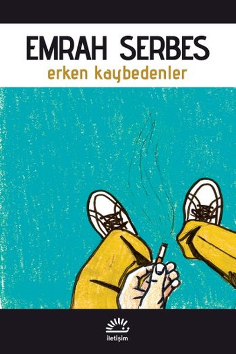
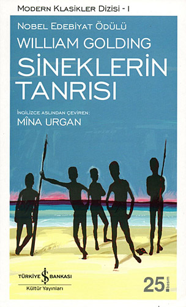
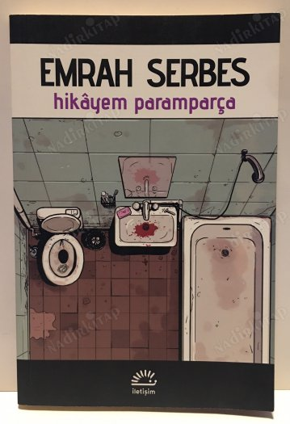
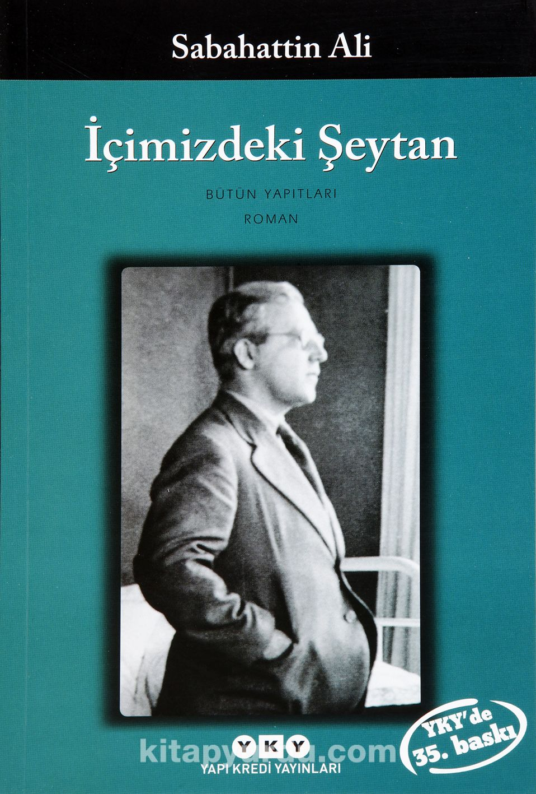
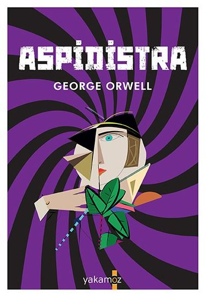
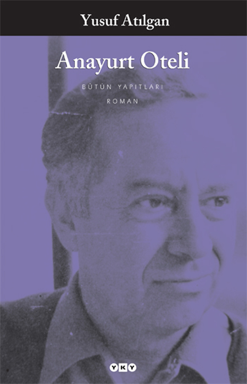

CENKPOSTACI
KİTAP & BOOK
 |
Duygusal olan her şey, duyguyu elde ettiği andan başlayarak bağımlılığın
kötülüğünü hissedip özgürlüğün peşinden koşar. Sayfa 31. Birileri, sürekli olarak geçmiş yaşamlarının mutluluğunu gözlerinin önünde bulundurur ve gelecekte de böyle bir hoşnutluğun beklentisi içindedir. . Sayfa 22. Demek ki, halklardır kendilerini teslim edenler, daha doğrusu kendilerini ezdirenler; çünkü kulluk etmeye son verdikleri an üstlerindeki bu yükten de kurtulmuş olacaklardır. Sayfa 23. |
|  |
Büyüdükçe arzularım küçüldü, şaşkınlıklarım küçüldü, beklentilerim küçüldü. Büyüdükçe öyle küçüldüm ki içimde taşacak bir şey kalmadı. Sayfa 15. Daha çok geceleri. Öfkeyle sıvanmış bir özlem. Bazen sinirden mi gözlerim doluyor, sevgiden mi, özlemden mi, yoksa nostalji ihtiyacından mı bilemiyorum, herhalde alışkanlıktandır deyip uyuyorum. kalmadı. Sayfa 8. Bu hain, aşağılık dünyanın gemisi batarken gururla gülümseyebilenlere ne mutlu! Ne mutlu aşkları yüzünden haysiyetlerini kaybetmeyi göze alabilen adamlara! Sayfa 140. |
|  | Cahilliklerini bilmeminin utancı içindeydiler ve bilgisizliklerini nasıl açıklayacaklarını da bilemiyorlardı. Sayfa 43. Ayrı ayrı yaşantıları, ayrı ayrı duyguları olan iki kıta gibiydiler; bir ilişki kurulamıyordu aralarında. Sayfa 62. Esen meltemlerin, bağırıp çağırmaların, yüksek dağa yandan vuran güneş ışınlarının arasında dostluğun, birlikte bir serüveni yaşamanın, hoşnut olmanın, o gözle görünmeyen garip aydınlığın, o büyüleyici havası, bir kez daha sardı iki çocuğu da. Sayfa 43. |
|  | Yalan mı söylüyorum yine, olsun. Sen biliyorsun nasılsa. Bir sürü doğru söyledik ama hiç burnumuz kısalmadı. Sayfa 36. Belki de insanlar topluma karışmak için değil, topluma karşı iki kişilik bir savunma hattı kurmak için evleniyorlardır. Belki de çürümeyi paylaşmak için. Kim bilir?! Sayfa 61. Bu hızla ölmeye devam edersek bütün dünya mezarlık olacak. Ama sen hala ölümü kişisel bir şey olarak algılıyorsun. Herkes uzmanı olduğu konunun zalimi olmuş. Sayfa 81. |
|  | 'Hayat bir tesadüfler silsilesi imiş, âlâ! Fakat tesadüfün de kendine göre bir mantığı olmalı, değil mi ya?' Sayfa 84. "İçimizde şeytan yok.... İçimizde aciz var... Tembellik var... İradesizlik, bilgisizlik ve bunların hepsinden daha korkunç bir şey: hakikatleri görmekten kaçmak itiyadı var..." Sayfa 250. "İnsan dünyaya sadece yemek, içmek, koynuna birini alıp yatmak için gelmiş olamazdı. Daha büyük ve insanca bir sebep lazımdı." Sayfa 188. |
|  | Ne kadar incelikle gizlenirse gizlensin, yardım ya da sadaka korkunçtur; verenle alan arasında her zaman için hastalıklı bir ilişki, neredeyse gizli bir nefret vardır. Sayfa 238. Cennette hizmet etmektense cehennemde hüküm sürmek yeğdir, hatta, cennette hizmet etmektense, cehennemde hizmet etmek yeğdir. Sayfa 60. Bir akvaryumdaki balıklar gibi birbirinin yanından geçen ve birbirleriyle iletişim kurmaktan kaçınan , birbirinin varlığının bile neredeyse farkında olmayan yedi milyon insan. Sayfa 87. |
|  | Son yıllarda dürüstlük, namus gibi değer yargılarına her fırsatta başkaldırmaktan hoşlananlar çoğalmış... Sayfa 20. Yorumlar, nedenler önemsizdi; kesin değildi. Önemli olan insanın edimleriydi. Değişmez tek bir kesinlik vardı insan için: Ölüm. Sayfa 105. Ne oldu? Yapmayı unuttuğu birşeyi mi anımsadı birden? Ya da yeryüzünde tek gerçek değerin kendisine verilmiş bu olağanüstü yaşam armağanını korumak, her şeye karşın sağ kalmak, direnmek olduğunu mu anladı giderayak? Yoksa bilinçsiz canlı etin ölüme kendiliğinden bir tepkisi miydi bu? Sayfa 128. |
+90 0507 859 37 82
cenkp08@gmail.com